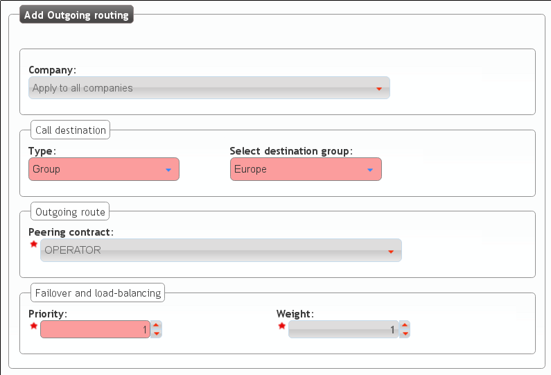

Outgoing Routing configuration¶
We already have our test call categorized as a call within the Target pattern ‘Spain’. In addition, we also have a Target pattern group including ‘Spain’, called ‘Europe’.
Now we have to tell IvozProvider that calls to ‘Spain’ or ‘Europe’ should be established through our Contract Peering.
To make this assignment, we use the section Outgoing routing:
If we choose routing ‘Spain’ calls only through our Peering contract, we will make this configuration:

On the other hand, if we are more generous and we decide to place calls to all european countries, we would make this configuration:
For more information about routing and load balancing check Outgoing Routing section: